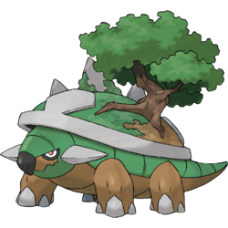

-
Pikachu
HP 300

Descrição
Pikachu é um tipo de Pokémon elétrico: os bolsos em suas bochechas, identificado por discos vermelhos que decoram, são capazes de gerar choques elétricos de intensidade variável, chegando até o nível de poder de um raio. Eles também o usam para se defender.
-
Charizard
HP 800

Descrição
Charizard é um Pokémon dracônico e bípede . É principalmente laranja com uma parte inferior creme do peito até a ponta da cauda. Tem um pescoço longo, pequenos olhos azuis, narinas ligeiramente levantadas e duas estruturas semelhantes a chifres saindo da parte de trás de sua cabeça retangular. Existem duas presas visíveis na mandíbula superior quando a boca está fechada. Duas grandes asas com partes inferiores azul-esverdeadas brotam de suas costas, e um apêndice em forma de chifre se projeta do topo da terceira articulação de cada asa. Um único dedo da asa é visível através do centro de cada membrana da asa.
-
Mewtwo
HP 1200

Descrição
Mewtwo o pokémon genético, o pokémon que foi clonado geneticamente do Mew, o poder sientifico dos humanos não conseguiu dar a ele um coração compassivo, geralmente permanece imóvel para conservar suas energias, de forma que possa liberar seu poder total em batalha.
-
Serperior
HP 700
Descrição
Serperior (Japonês: ジャローダ Jalorda) é uma espécie de Pokémon do tipo Planta, introduzida na 5ª Geração e classificada oficialmente como Royal Pokémon. É a forma evoluída de Servine e a forma final de Snivy, um dos Pokémon iniciais entregues pela Professora Juniper na região de Unova..
-
Milotic
HP 700
Descrição
Milotic é um Pokémon famoso por sua beleza, escrituras antigas relatam a história de uma bela moça, que ao sentir tanta pena ao encontrar um Feebas, chorou e suas lágrimas fizeram o Feebas se transformar em um belo Pokémon. Desde então todas as pessoas de todos os continentes, se admiram e param para olhar a beleza de Milotic.
-
Corsola
HP 250

Descrição
Corsola é um Pokémon antozoano pequeno, rosa e arredondado com crescimentos semelhantes a galhos nas costas, semelhantes aos corais. Há um chifre menor e sem corte em sua testa e tem olhos pretos e ovais. Tem um lado de baixo branco, que salpica para os lados. Suas quatro pernas e dois braços são rombudos e atarracados. Encontrado nas águas quentes e rasas dos mares do sul, Corsola requer água limpa para viver. Se seu habitat estiver sujo, os crescimentos em suas costas ficam descoloridos e degeneram. No entanto, quando está saudável, seus crescimentos caem regularmente e voltam a crescer; é capaz de regenerá-los ao longo de uma única noite. Forma grandes grupos sociais. Ocasionalmente, esses grupos ficam tão grandes que as pessoas podem viver em cima deles, como é o caso de Pacifidlog Town . O chifre de Corsola é um material valioso, comumente usado para joias e esculturas, como visto no anime . Pokémon menores como Horsea e Luvdisc às vezes são protegidos pelos ramos de Corsola e até oferecem proteção contra inimigos.
-
Torterra
HP 500
Descrição
Torterra possuem uma concha gigante, sua aparência que se assemelha a um dinossauro. Sobre esta concha repousada como uma única árvore e três triangulares, extensões de pedra de cor cinza que se assemelham os picos das montanhas, em oposição aos dois arbustos de Grote. A concha também tem uma padronização de castanho, assemelhando-se no solo, ao lado da árvore, e um aro branco que forma uma continuação em parte da frente do invólucro, o aspecto mais semelhante a um diamante de basebol.
-
Mew
HP 2000
Descrição
Mew é um Pokémon ultra raro que qualquer jogador dos tempo de Red/Blue alguma vez sonhou em capturar, ao passo que o Ditto é uma geleca rosa usada normalmente como mero reprodutor. Esteticamente, você pode não ver muita coisa de semelhante entre uma gosma e um animal indefinido, mas se olhar com atenção, descobrirá os detalhes. Nos jogos da série, Mew e Ditto tem a mesma cor normal (rosa) e como Shiny também (azul). Além disso, compartilham a mesma massa (8.8lbs), ambos são assexuados (não possuem gênero) e ganham destaque por ser Pokémon muito enigmáticos.